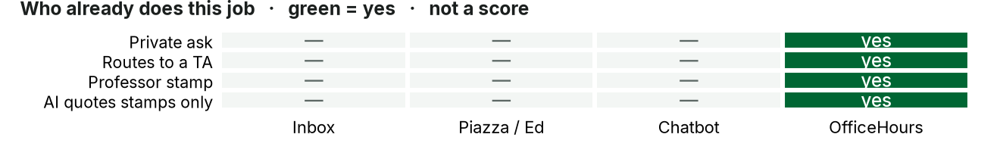
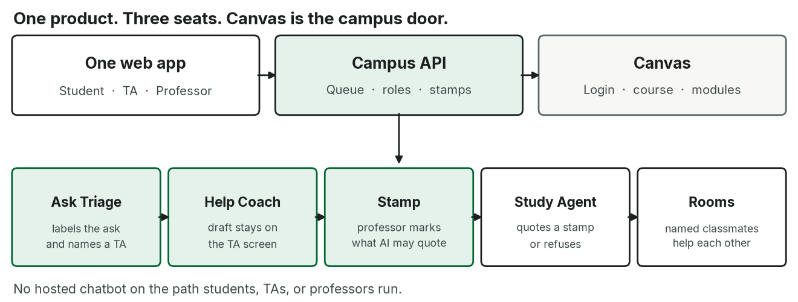
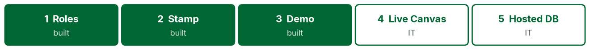
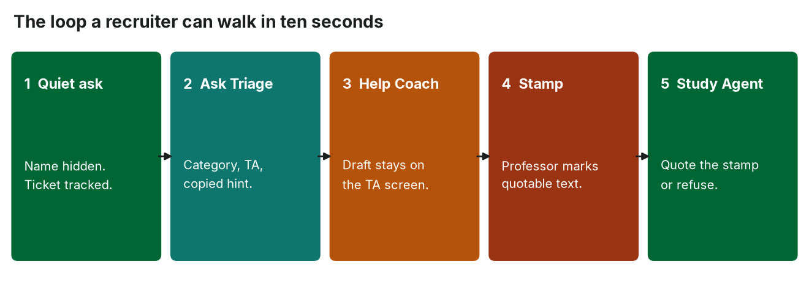
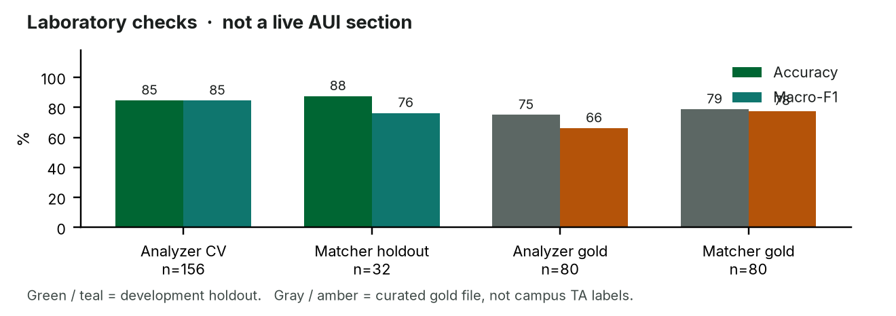

Project Overview
Office hours break two ways: staff hear the same stuck point five times, and quiet students will not put a name on a public channel. OfficeHours is one Canvas-linked desk that triages the ask and lets a professor stamp the only text an agent may quote.
- Context / application area: AUI courses at peak demand — students, TAs, and professors.
- Proposed idea: One web app — Quiet ask, Ask Triage, Help Coach, stamped Study Agent, Rooms, Canvas login.
- Expected contribution: Less repeat load, a private way to ask, and faculty-controlled AI answers.
Problem Definition & Relevance
Cut repeat load and ask friction without letting a chatbot invent the syllabus.
- Problem statement / research question: How can campus office hours route asks and still keep professors as the gate on AI answers?
- Stakeholders / intended users: Students (Quiet ask, Rooms, Study Agent); TAs (desk, Help Coach); Professors (clusters, stamp, Canvas).
- Evidence, scope & constraints: Local models by default; live Canvas needs campus credentials; no portal scrape; no open chatbot.
Related Work, Gap & Proposed Innovation
Inbox, Piazza/Ed, and tutoring chatbots do not combine a private ask, a triaged TA queue, and a stamp before student-facing AI.
- Existing work / alternatives: LMS inbox; Piazza/Ed; FAQ bots; unconstrained campus chatbots.
- Gap / unmet need: No Quiet receipt + local triage + dual-TA match + professor stamp before an agent quotes.
- Proposed innovation: Those four capabilities in one Canvas-linked product.

Objectives & Proposed Success Criteria
Three objectives a recruiter can check on the demo and one live Canvas checklist.
| Objective | Planned Metric / Evidence | Target / Criterion |
|---|
| Route the ask to the right TA / help mode | Holdout quality + live demo walkthrough | Usable demo triage; cite lab scores as lab, not campus |
| Keep Study Agent answers professor-gated | Refuse unstamped or weakly matched notes | 0 unauthorized Study Agent quotes |
| Open a Canvas-first campus deploy path | Campus login + module sync on one test course | Live checklist pass on one AUI course |
Proposed System / Research Design
Students, TAs, and professors share one web app. The API owns the queue and stamps. Canvas is the campus door.
- Software: React web app; FastAPI; SQLite now, Postgres when hosted; live queue; Quiet-ask privacy.
- Models: MiniLM vectors, logistic classifiers, cosine lookup, planner tables. No hosted chatbot on the user path.

Requirements & Initial Work Plan
A three-seat demo is planned for Oct–Nov 2026. Live Canvas is scheduled for Dec 2026, once campus credentials arrive.
- Key requirements: Roles; Ask Triage; TA desk + Help Coach; professor stamp; Rooms; Canvas login and sync.
- Planned phases: (1) roles + triage (2) TA / stamp (3) Rooms + demo (4) live Canvas (5) hosted database.
- Dependencies: Canvas launch key, API token, HTTPS, one AUI test course.

Methodology / Proposed Technical Approach
Local models plus a professor stamp fit campus integrity better than an open tutoring bot.
- Proposed methodology: Iterative product build, automated tests, and three-seat demos.
- Technologies / methods: React, FastAPI, MiniLM, scikit-learn, Canvas LTI 1.3.
- Data / resources: Synthetic and silver asks; curated gold file; local Canvas mirror until live modules.
- Reproducibility / management: GitHub, documentation, train scripts, and evaluation reports.

Planned Evaluation & Validation
Lab checks, a gold-label file, three-seat walkthroughs, and a live Canvas checklist. No campus-quality claim here.
- Validation approach: Automated tests; holdouts; gold-label lab; student / TA / professor walkthrough; live checklist.
- Comparison / reference: Inbox / forum baseline. Accept if demo triage works, the agent never quotes unstamped text, and one course can launch.
- Planned metrics: Lab accuracy / F1 (honesty table); stamp refusal; Canvas launch success; walkthrough completion.

Planned Deliverables & Project Timeline
- Planned deliverables: Running product; trained models; diagrams; demo script; live checklist; Capstone report.
- Milestone 1: Problem definition / requirements / literature → Sep 2026
- Milestone 2: Design / development / experimentation → Fall 2026
- Milestone 3: Evaluation / refinement / finalization → Capstone deadline
Feasibility, Resources & Risks
Feasible as a demo now and live when credentials arrive. The risk is campus keys, not missing code.
- Required resources: Laptop, GitHub, SQLite then Postgres, Canvas key and token. No GPU required for the demo.
- Main feasibility concern / risk: IT delay on the Canvas launch key and API token.
- Mitigation / fallback: Local Canvas mirror for showcase; one-course live stage; Postgres at go-live.
Ethics, Privacy, Security & Responsible AI
Privacy, security, and responsible AI are in scope for a campus help product.
- Privacy / human participants: Quiet asks hide the name from classmates; course-scoped data; minimize identifiers.
- Cybersecurity / legal / standards: Role login; HTTPS for live; no scrape; Canvas LTI 1.3; least-privilege token.
- AI use plan: Local Ask Triage and Help Coach; Study Agent quotes stamped notes only; hosted LLM stays off unless approved.
- AI system risks if applicable: Label bias and misses go to a human TA; the stamp blocks an invented syllabus.
Expected Contribution & Potential Impact
- Expected technical / research contribution: A gated local-NLP office-hours desk with dual-TA routing and a professor-controlled agent.
- Potential value / impact: Safer campus AI help, and a pattern other LMS schools can copy.
- Expected limitations / boundaries: Not a student-information system; not live-grade planning yet; not a multilingual chatbot.